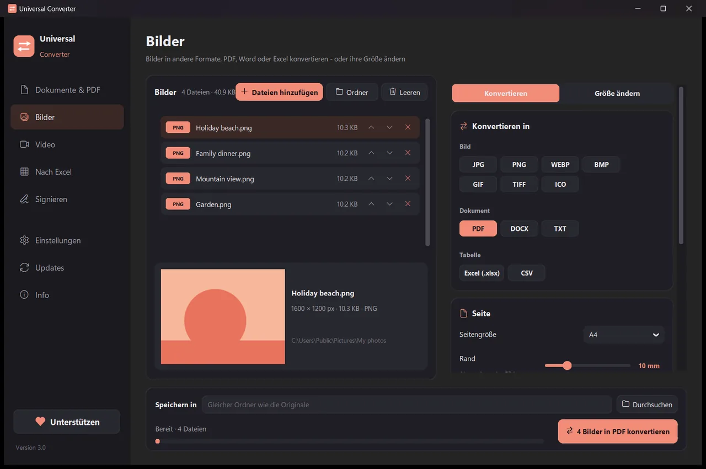
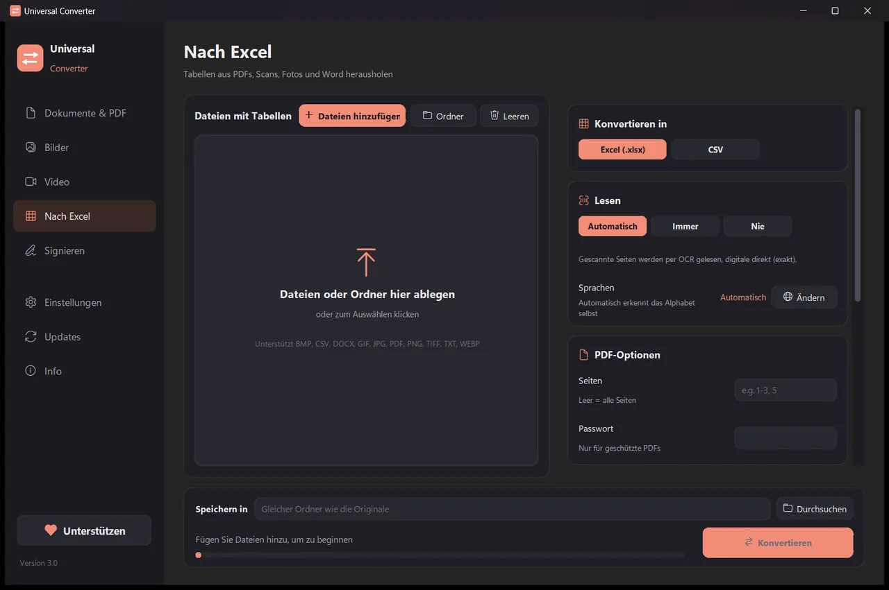
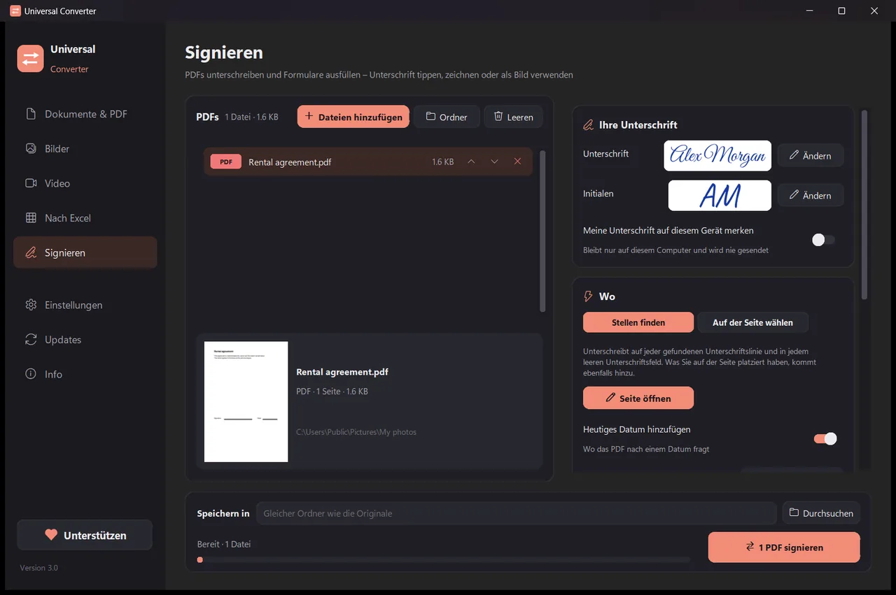

Dateien auf dem eigenen Gerät umwandeln
Bilder, Dokumente, Video und Audio, PDFs und Tabellen nach Excel, alles in einer App. Nichts wird hochgeladen: Ihre Dateien verlassen nie Ihr Gerät.
Installieren und aktualisieren
- Öffnen Sie die heruntergeladene .dmg-Datei und ziehen Sie Universal Converter in „Programme“.
- Öffnen Sie die App. Beim ersten Mal blockiert macOS sie, weil sie nicht von Apple signiert ist: Klicken Sie auf „Fertig“.
- Öffnen Sie Systemeinstellungen > Datenschutz & Sicherheit, scrollen Sie nach unten, klicken Sie auf „Dennoch öffnen“ und geben Sie Ihr Passwort ein. Das ist nur einmal nötig.
Updates: Wenn Sie es beim ersten Start erlauben, sucht die App bei jedem Start nach neuen Versionen, prüft ihre digitale Signatur und installiert sie, wann Sie möchten.
Installieren und aktualisieren
- Tippen Sie auf dem Handy auf „Für Android herunterladen“.
- Öffnen Sie die heruntergeladene Datei. Wenn Android fragt, erlauben Sie Ihrem Browser oder Dateimanager, Apps zu installieren.
- Tippen Sie auf „Installieren“.
Updates: Die App prüft etwa einmal am Tag und meldet sich, wenn eine neue Version bereitsteht. Laden Sie sie genauso herunter und installieren Sie sie über die alte; Ihre Einstellungen bleiben erhalten.

Privat
Alles läuft auf Ihrem Gerät. Kein Hochladen, keine Warteschlange, keine Größenbeschränkung.
Kostenlos
Kostenlos nutzbar, ohne Werbung, ohne Konto und ohne Wasserzeichen.
18 Sprachen
Deutsch, Englisch, Griechisch, Spanisch, Italienisch, Französisch, Portugiesisch, Polnisch, Russisch, Arabisch, Hebräisch, Chinesisch, Japanisch, Koreanisch, Tamil, Afrikaans, Yoruba und Hausa.
Fünf Werkzeuge in einem Fenster

Dokumente & PDF
Umwandeln zwischen PDF, Word, ODT, RTF, TXT, Markdown, HTML, EPUB, PowerPoint und Excel. Seiten in Bilder umwandeln und mehrere Dateien zu einem PDF zusammenfügen. Schriften, Größen und Farben bleiben erhalten. PDFs auf die gewünschte Größe verkleinern.
Bilder
Umwandeln zwischen JPG, PNG, WEBP, TIFF, BMP, GIF und ICO. Größe in Pixeln, Prozent oder Dateigröße ändern, Bilder zu einem PDF oder Word-Dokument zusammenfügen und Text in Bildern lesen (OCR). Auch PDFs: Jede Seite wird zu einem Bild.

Video
Videos zwischen MP4, MKV, WebM, MOV und AVI umwandeln und komprimieren, mit AV1, H.265, H.264 oder VP9. Kürzen, zuschneiden, drehen und skalieren, GIFs erstellen, Einzelbilder speichern oder nur den Ton als MP3, M4A, FLAC, WAV, OGG oder Opus behalten. Unter Android: MP4 oder MKV mit H.264 oder H.265; kürzen, zuschneiden, drehen, skalieren, Einzelbilder speichern oder den Ton als M4A.

Nach Excel
Tabellen aus PDFs, Scans und Fotos nach Excel oder CSV holen: Kontoauszüge, Rechnungen, Preislisten. Liest Deutsch, Englisch, Griechisch und über 30 weitere Sprachen.

Signieren
PDFs unterschreiben und Formulare ausfüllen. Tippen Sie Ihren Namen in Handschrift, zeichnen Sie Ihre Unterschrift oder verwenden Sie ein Foto davon. Die App findet die Unterschriftslinien selbst, oder Sie klicken dorthin, wo Unterschrift, Initialen, Datum, Text oder Häkchen hin sollen. Viele Dateien auf einmal unterschreiben; die Originale bleiben unverändert.
- Nutzt für Videos wenn möglich die Grafikkarte: meist 5- bis 20-mal schneller.
- Ganze Ordner hineinziehen: alle Dateien werden in einem Durchgang umgewandelt.
- Sagt Ihnen, wenn eine Datei in einen anderen Reiter gehört, und bringt sie mit einem Klick dorthin.
- Meldet neue Versionen; unter Windows und Mac kann sie sie für Sie installieren, digital geprüft.
- Helles und dunkles Aussehen, passend zu Ihrem Gerät.
So funktioniert es
- Öffnen Sie Universal Converter und wählen Sie links Dokumente & PDF · Bilder · Video · Nach Excel · Signieren.
- Ziehen Sie Ihre Dateien oder einen ganzen Ordner in das Fenster, oder klicken Sie auf Dateien hinzufügen.
- Klicken Sie auf Konvertieren. Die neuen Dateien werden neben den Originalen gespeichert oder im gewählten Ordner.
Was es kann
- PDF in Word umwandeln
- Word-Dokumente in PDF umwandeln
- Mehrere Dateien zu einem PDF zusammenfügen
- Ein PDF auf eine gewählte Größe komprimieren
- PDF-Seiten in JPG-Bilder umwandeln
- Gescanntes Dokument in eine bearbeitbare Word-Datei umwandeln
- Bilder zwischen JPG, PNG, WEBP und mehr umwandeln
- Bildgröße ändern oder auf eine Dateigröße verkleinern
- Fotos zu einem PDF zusammenfügen
- Text aus einem Bild kopieren (OCR)
- Video komprimieren, ohne es hochzuladen
- Videos zwischen MP4, MKV, WebM, MOV und AVI umwandeln
- Den Ton eines Videos als MP3 speichern
- GIF aus einem Video erstellen
- Tabellen aus einem PDF nach Excel holen
- Kontoauszug von PDF in Excel umwandeln
- Tabellen aus PDF-Rechnungen nach Excel übertragen
- Ein PDF unterschreiben
- Ein PDF-Formular ausfüllen
Fragen
Ist es wirklich kostenlos?
Ja. Universal Converter ist kostenlos nutzbar, ohne Werbung, ohne Konto und ohne Zeitlimit. Wenn es Ihnen hilft, können Sie die Entwicklung mit einem freiwilligen Beitrag unterstützen, aber das müssen Sie nie.
Werden meine Dateien irgendwo hochgeladen?
Nein. Jede Umwandlung geschieht auf Ihrem eigenen Gerät, daher funktioniert sie auch ohne Internetverbindung. Die App geht nur online, um nach Updates zu suchen, um gewählte zusätzliche Sprachen herunterzuladen und, wenn Sie es erlauben, um anonyme Fehlerberichte zu senden.
Windows zeigt eine SmartScreen-Warnung. Ist das normal?
Ja. Das Installationsprogramm ist noch nicht codesigniert, daher kennt Windows es nicht. Wählen Sie „Weitere Informationen“ und dann „Trotzdem ausführen“. Spätere Updates prüft die App selbst digital. Oder installieren Sie es aus dem Microsoft Store, dort erscheint keine Warnung.
Wie öffne ich es auf einem Mac?
Öffnen Sie die heruntergeladene Datei und ziehen Sie Universal Converter in „Programme“. Die App ist nicht von Apple signiert, daher blockiert macOS sie beim ersten Öffnen: Klicken Sie auf „Fertig“, öffnen Sie dann Systemeinstellungen > Datenschutz & Sicherheit, klicken Sie auf „Dennoch öffnen“ und geben Sie Ihr Passwort ein. Das ist nur einmal nötig.
Wie installiere ich es auf Android?
Laden Sie die APK auf das Handy, öffnen Sie sie und erlauben Sie die Installation, wenn Sie gefragt werden (Android 10 oder neuer). Englisch und Griechisch sind integriert; die anderen Sprachen laden Sie in den Einstellungen der App herunter. Die App meldet sich, wenn es eine neue Version gibt.
Welche Sprachen gibt es?
Die App gibt es auf Deutsch, Englisch, Griechisch, Spanisch, Italienisch, Französisch, Portugiesisch, Polnisch, Russisch, Arabisch, Hebräisch, Chinesisch, Japanisch, Koreanisch, Tamil, Afrikaans, Yoruba und Hausa. Die Sprache wählen Sie bei der Installation oder später in den Einstellungen.